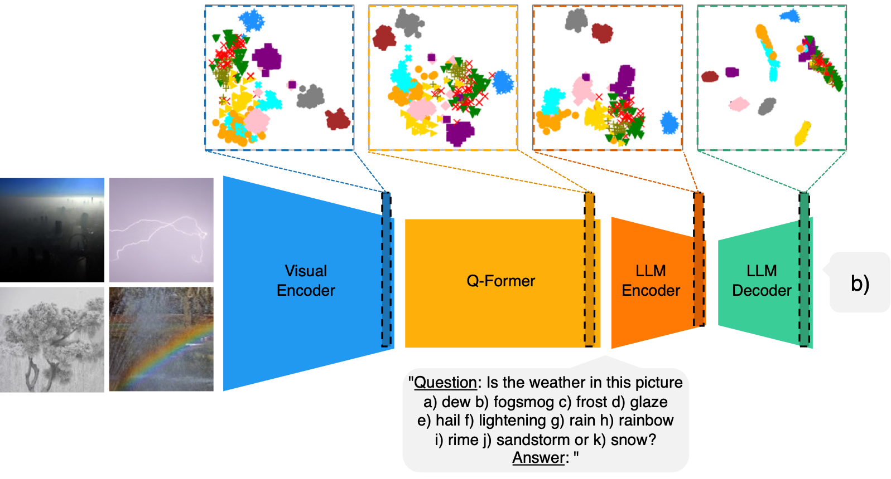

|
Dipika Khullar I'm a researcher and engineer interested in making AI systems safer and more interpretable. Currently, I am working with Fabien Roger through the MATS program on making models more honest. I am also an Applied Scientist at Amazon AGI, where I focus on multimodal pretraining. Previously, I studied at UC Berkeley. I am also extremely grateful to have worked with wonderful open community research initiatives within EleutherAI and Cohere Labs. Email / CV / Google Scholar / Twitter / Github |

News |
|
Research |

|
Self-Attribution Bias: When AI Monitors Go Easy on Themselves
Dipika Khullar, Jack Hopkins, Rowan Wang, Fabien Roger arXiv / OpenReview / LessWrong / Tweet / Code We identify self-attribution bias: LLMs systematically rate actions as less risky and more correct when those actions appear to be their own prior outputs. This failure is largely invisible in standard off-policy evaluations, causing monitors to look more reliable than they actually are in deployment. |

|
Making VLMs More Robot-Friendly: Self-Critical Distillation of Low-Level Procedural Reasoning
Chan Young Park, Jillian Fisher, Marius Memmel, Dipika Khullar, Seoho Yun, Abhishek Gupta, Yejin Choi arXiv SelfReVision is a lightweight self-improvement framework that enables small VLMs to iteratively critique, revise, and verify their own procedural plans without external supervision. |

|
Kaleidoscope: In-language Exams for Massively Multilingual Vision Evaluation
Israfel Salazar, Manuel Fernández Burda, Shayekh Bin Islam, Arshia Soltani Moakhar, Shivalika Singh, Fabian Farestam, Angelika Romanou, Danylo Boiko, Dipika Khullar, Mike Zhang, Dominik Krzemiński, Jekaterina Novikova, Luísa Shimabucoro, Joseph Marvin Imperial, Rishabh Maheshwary, Sharad Duwal, Alfonso Amayuelas, Swati Rajwal, Jebish Purbey, Ahmed Ruby, Nicholas Popovič, Marek Suppa, Azmine Toushik Wasi, Ram Mohan Rao Kadiyala, Olga Tsymboi, Maksim Kostritsya, Bardia Soltani Moakhar, Gabriel da Costa Merlin, Otávio Ferracioli Coletti, Maral Jabbari Shiviari, MohammadAmin farahani fard, Silvia Fernandez, María Grandury, Dmitry Abulkhanov, Drishti Sharma, Andre Guarnier De Mitri, Leticia Bossatto Marchezi, Setayesh Heydari, Johan Obando-Ceron, Nazar Kohut, Beyza Ermis, Desmond Elliott, Enzo Ferrante, Sara Hooker, Marzieh Fadaee ICLR 2026 Poster arXiv / OpenReview Kaleidoscope is the most comprehensive in-language exam benchmark for multilingual vision-language models, covering 18 languages and 14 subjects across 20,911 questions, and reveals large performance gaps for low-resource languages. |
|
 
|
Improving Few-Shot Image Classification Through Multiple Choice Questions
Dipika Khullar, Emmett Goodman, Negin Sokhandan arXiv We improve few-shot image classification by using multiple-choice questions to extract prompt-specific latent representations from VLMs, which are then matched against class prototypes built from a small set of labeled examples. |
Blog Posts |
|
We Built a Tool to Protect Your Dataset From Simple Scrapers
Dipika Khullar, Alex Turner, Edward Turner, Roy Rinberg LessWrong, July 2025 We built easy-dataset-share, a CLI tool that helps AI researchers share datasets responsibly by preventing evaluation contamination. The tool provides basic protection against scraping through canary markers, hash verification, and optional encryption, while also generating robots.txt and Terms of Service to deter commercial data mining. |
|
Research Update: Applications of Local Volume Measurement
Dipika Khullar, David Johnston EleutherAI Blog, June 2025 We tested local volume measurement for detecting model misalignment and anomalous datapoints using the tyche library. Our results showed that local volume measurements were not competitive with other strategies like POSER for detecting misaligned models, leading us to explore data attribution methods instead. |
|
Build Streamlit apps in Amazon SageMaker AI Studio
Dipika Khullar, Marcelo Aberle, Yash Shah AWS Machine Learning Blog, April 2023 This post outlines how to build and host Streamlit web apps in Amazon SageMaker AI Studio in a secure and reproducible manner without any time-consuming front-end development. We demonstrate with a custom Amazon Rekognition demo that annotates and labels uploaded images, serving as a starting point that can be generalized to demo any custom ML model. |
|
Create Amazon SageMaker models using the PyTorch Model Zoo
Dipika Khullar, Marcelo Aberle, Ninad Kulkarni, Yash Shah AWS Machine Learning Blog, December 2022 This blog post demonstrates how to perform ML inference using an object detection model from the PyTorch Model Zoo within SageMaker. We walk through an end-to-end example using a Faster R-CNN object detection model, from loading model weights to deploying via SageMaker Batch Transform and visualizing results. |